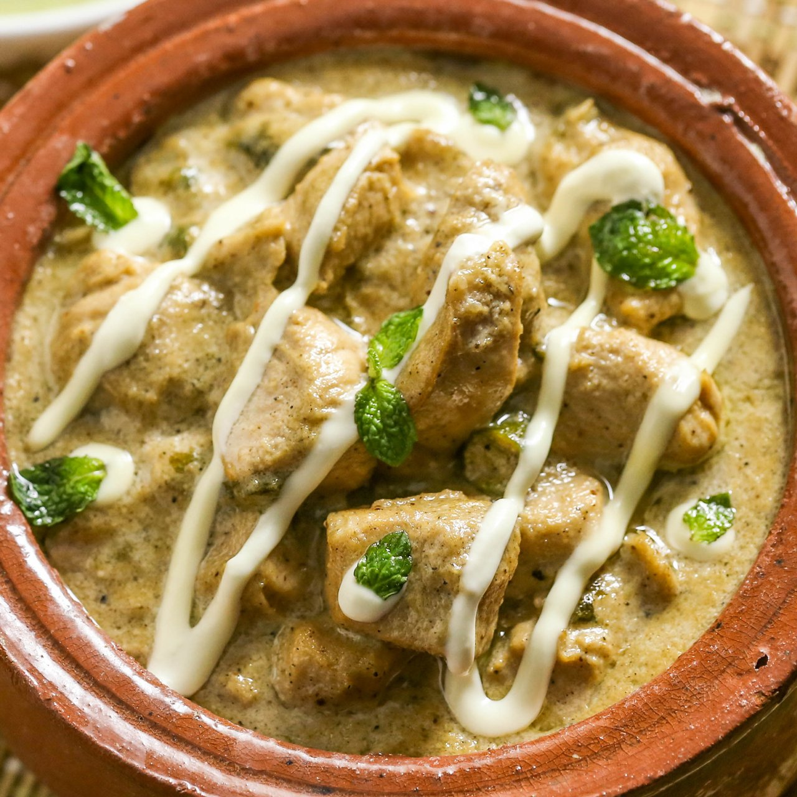

Chicken White Handi

Description
Chicken White Handi is a creamy, rich, and flavorful dish made with boneless chicken, yogurt, cream, and aromatic spices. Unlike traditional tomato-based curries, this dish is known for its white, velvety texture and mild yet delicious taste.
It is a popular dish in Pakistani and Indian cuisine, usually served with naan or steamed rice for a perfect meal.
Ingredients
- 500g boneless chicken (cubed)
- 1 cup yogurt
- 1/2 cup fresh cream
- 1 large onion (finely chopped)
- 2 tablespoons butter or ghee
- 1 tablespoon ginger-garlic paste
- 2 green chilies (chopped)
- 1 teaspoon white pepper powder
- 1 teaspoon black pepper powder
- 1 teaspoon cumin powder
- 1/2 teaspoon garam masala
- 1/2 teaspoon salt (or to taste)
- 1/4 cup milk
- 2 tablespoons cashew paste (optional, for extra creaminess)
- Fresh coriander and ginger slices for garnishing
Steps
- Heat butter or ghee in a pan and sauté onions until they turn soft and translucent.
- Add ginger-garlic paste and cook for a minute until fragrant.
- Add chicken cubes and cook on medium heat until they turn white.
- Add yogurt, white pepper, black pepper, cumin powder, and salt. Mix well.
- Cook on low heat until the chicken is tender and the spices are well blended.
- Add fresh cream, milk, and cashew paste (if using) to enhance the creamy texture.
- Simmer for a few more minutes until the sauce thickens.
- Sprinkle garam masala and chopped green chilies.
- Garnish with fresh coriander and ginger slices.
- Serve hot with naan, roti, or steamed rice.